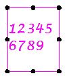

Indents and Spacing tab
The Indents and Spacing tab applies character and line spacing for text boxes, watermarks, and for technical requirements lists. It is available in the Text Box Properties (or Watermark Properties) dialog box and in the Text Box Style dialog box. It is also available in the Technical Requirements Properties dialog box.
All units are the current working units specified in the text style.
When working with text boxes, you can apply a different setting to each line of text. When working with technical requirements lists, setting an option applies that value to all lines in the requirements list.
- Default tab stops
-
Specifies the spacing between each of the default tab stops. This option also controls the amount by which a selected paragraph is indented using the Increase Indent command on the Bullets and Numbering menu.
This option is not available for technical requirements lists.
- Indentation
-
Note:
Text boxes—Because indentation options are applied per line in a text box, some text must be selected before selecting an indentation option.
- Left
-
Specifies the amount of space between the left border and the paragraph.

- Special
-
Specifies how the first line of a paragraph is treated.
-
Nothing—All lines of the paragraph are justified. No lines are indented.
-
First Line—Indents the first line of the paragraph by the amount specified in the By box. Only the first line is indented.
-
Hanging—Indents the second line and all subsequent lines of text by the amount specified in the By box.
-
- By
-
Specifies the amount of indentation on the first line or hanging indent.
- Spacing
-
Determines the amount of space between lines and paragraphs.
To be able to change the Spacing options for existing text, the text box or text string must be selected.
Example:Spacing before and after a paragraph in a selected text box:

- Before
-
Adds space before a paragraph. This value is set in the current working units, not in points.
When a border is displayed, entering a value in the Before box adds white space between the border and the first line in the paragraph.
- After
-
Adds space after a paragraph. This value is set in the current working units, not in points.
When a border is displayed, entering a value in the After box adds white space between the border and the last line in the paragraph.
- Line
-
Specifies the amount of vertical space between lines of text.
-
Single—Sets the line spacing for each line to display the largest font in the line.
-
1.5—Sets the line spacing for the line to one-and-a-half times that of single lines.
-
Double—Sets the line spacing for the line to twice that of single lines.
-
At least—Sets the minimum line spacing needed to fit the largest font on the line. This line spacing option references the value specified in the At box.
-
When the largest font on the line is smaller than the value in the At box, then the line space is determined by the value in the At box.
-
When the largest font on the line is larger than the value in the At box, then the line space is determined by the largest font on the line.
-
-
Exactly—Specifies a fixed, precise line spacing. Changing the text height does not affect the line spacing.
-
Multiple—Sets the line spacing to an interval other than single, double, or 1.5. This line spacing option multiplies the value specified in the At box by 100, and increases the line spacing by the resulting percent.
Example:-
If the value in the At box is 1.15, the line spacing increases by 15 percent.
-
If the value in the At box is 3, the line spacing increases by 300 percent.
-
-
- At
-
Specifies the measurement for the line spacing. This value is referenced by the following Line spacing options:
-
At least—Valid At values are 0 inches through 22 inches, or the equivalent values in current working units. You also can enter a decimal value for length.
-
Exactly—Valid At values are 0.01 inches through 22 inches, or the equivalent values in current working units. You also can enter a decimal value for length.
-
Multiple—Valid At values are 0.06 through 132. You also can enter a scalar decimal value.
-
How do I
Add technical requirements to a drawingReference an annotation from a technical requirements list
Reference a technical requirement
Learn more
Adding technical requirementsLook up more details
Technical Requirements Properties dialog boxGeneral tab (Technical Requirements Properties dialog box)
Location tab (Technical Requirements Properties dialog box)
Text Format tab (Technical Requirements Properties dialog box)
Title tab (Technical Requirements Properties dialog box)